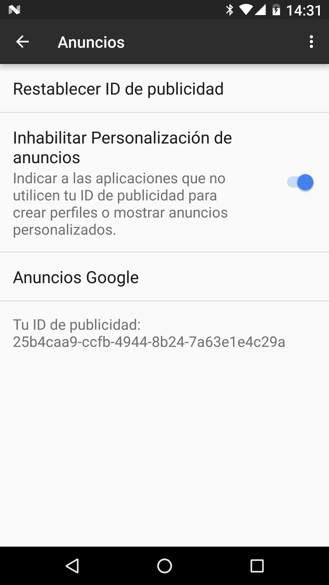

Hace algunos años la W3C (Consorcio Mundial de la Red) creó un mecanismo para que los navegadores informaran a los servidores web que no les gustaría ser rastreados. Esto se logra incluyendo un encabezado DNT (Do Not Track o No Rastrear) con las solicitudes web.
El encabezado DNT no provee realmente de mucha privacidad porque la mayoría de servidores web lo ignoran. Por ejemplo, Yahoo, Google, Microsoft y Facebook, todos ellos ignoran al menos algunos encabezados DNT.
Navegador Privado Gratuíto incluye un anuncio de banner en la parte inferior de la pantalla que está poblado por la red AdMob de Google. Por defecto, Google proporciona el ID publicitario del dispositivo a los anuncios que se muestran a través de esta red. Esto permite a las compañías publicitarias construir un perfil del dispositivo que muestre qué aplicaciones están instaladas (que muestran anuncios), la frecuencia con la que se utilizan y los anuncios en los que está interesado el usuario.
Los usuarios pueden elegir deshabilitar el ID publicitario en Configuración, Google, Anuncios.
El propósito de la versión gratuíta de Navegador Privado es la de permitir a la gente probar las características de la aplicación. La versión estándar se puede comprar en las principales tiendas de aplicaciones o descargarse gratuitamente de F-Droid.
Verizon, una de las principales compañías de telefonía móvil en los Estados Unidos, agrega un encabezado de rastreo único a todo el tráfico HTTP sin cifrar en su red. La EFF (Fundación de Frontera Electrónica) ha escrito sobre las implicaciones de privacidad de esta práctica. Debido a la presión pública Verizon ha creado una manera de optar por evitar este rastreo.